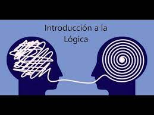
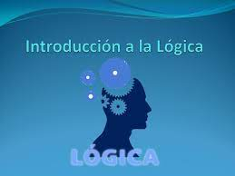

INTRODUCCIÓN A LA LÓGICA
La Lógica, es la disciplina que estudia el pensamiento humano y sus formas mentales (concepto, juicio y razonamiento) con la finalidad de comprobar si un razonamiento es correcto y verdadero. En Lógica lo correcto es la estructura de un razonamiento, es decir, lo correcto es cómo un razonamiento esta escrito. pero sin tomar en cuenta el contenido del mismo.
La Lógica estudia argumentos que están en la vida diaria, estudia los argumentos que están en la vida diaria, estudia los argumentos en una forma técnica o artificial y principalmente se dedica a diferenciar entre lo correcto e incorrecto, es decir, el estudio de los procesos para obtener conclusiones a partir de información dada.
objetivos de la semana:
- Discutir los origines de la lógica.
- Reconocer la lógica inductiva, analógica y deductiva.
- Descubrir el concepto de lógica
- Identificar un argumento y una proposición.
|
|
|
|---|---|
|  |  |